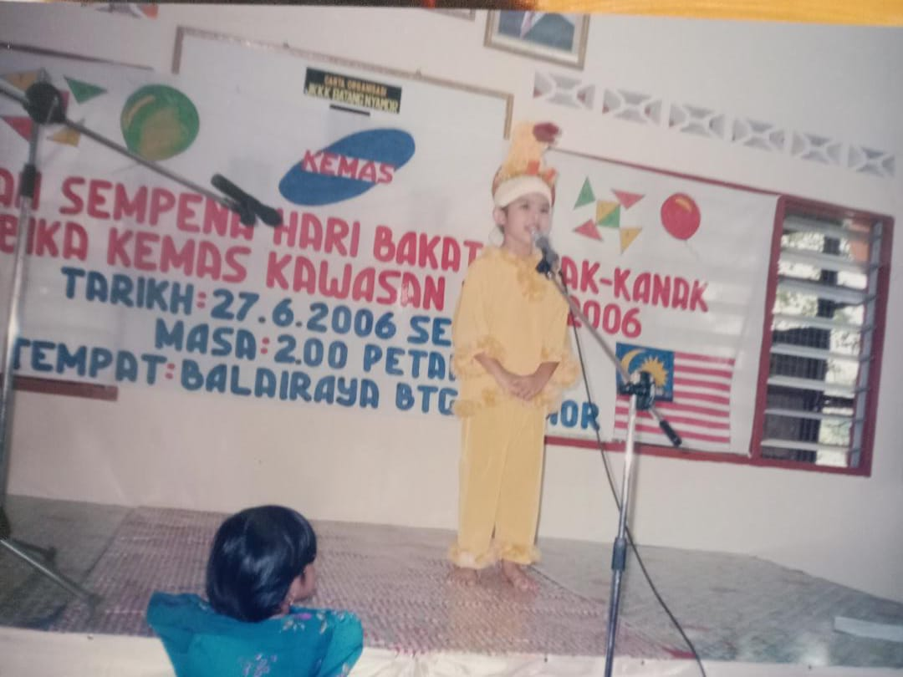
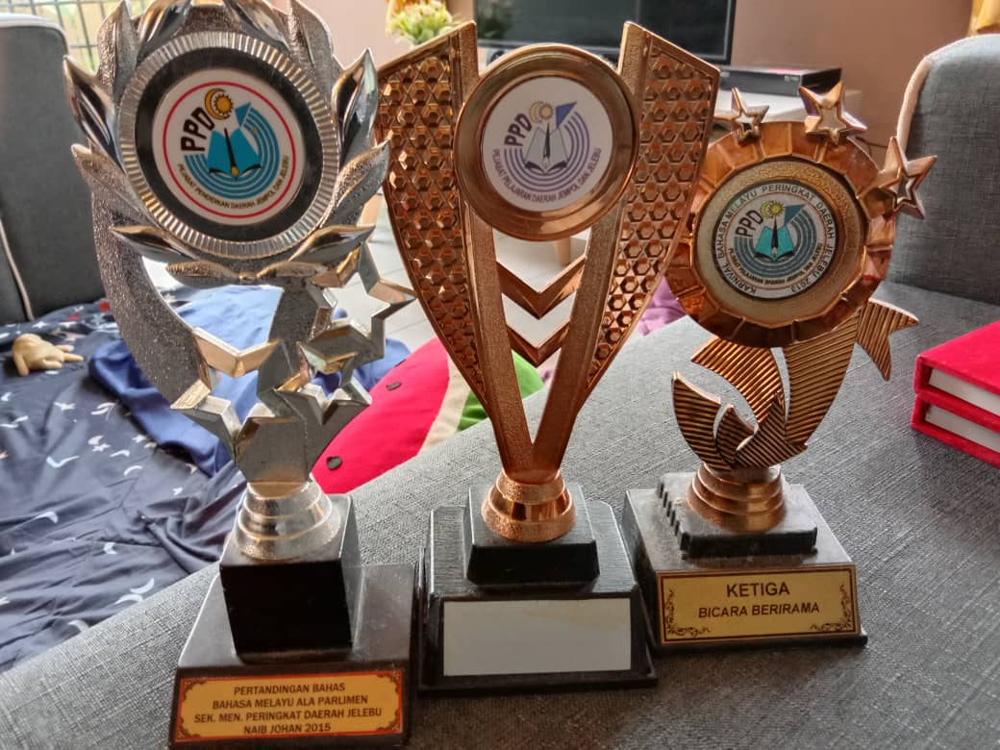

Home
About Me
Experience
My Family
THE EXPERIENCE THAT I HAVE BEEN THROUGHT

During my kindergarten life my mother is the first person that found my talent in singing, storytelling and also every single thing activity that related to talking and I am extrovert students thats time. My teacher teacher Norizan is the person that always keep teachimg me the best way to be a great person in every competition. Eventhought im not really good in sport i found that i have talent in be a good speaker or mc of event. The best memory is when i get the first prize in the story telling competition my mother is so supportive where she spend her time to sew my costume that time. I really love the costume and everyone is shock with my appearance int that competition. The memory when i start to have passion in this Experience it really can be forget. My parents is my big support that always believe that I am able to do what I am passion and i really love the support from my family so munch. From what I know and I learn every person in this always have their parents as a big supporters in their life. Without our parents we will develope the spirit and treasure in order to sucess in life.

This is some of medal and awards that i gain during my experience in winning every competition. Every time i get the medal I am very proud to show its to my mother. I believe that every sucess that i gain is from my responsibilities in always practices untill it be perfect. I never stop my passion even when I enter the universities life I stil love to enter every competition like this. i found that its really enjoyable when you get to work it something that you love. In universiteies I always enter the news reading competition, singing competition and also when there is an event I always to welcome my self to join the event and at the same time i will see the MC reading their prompter. And from that I start to volunteer my self when an event need an MC and also a moderator for the event or occasion and celebration.
ONE OF MY TALENT SINGING
Your browser does not support the video tag.